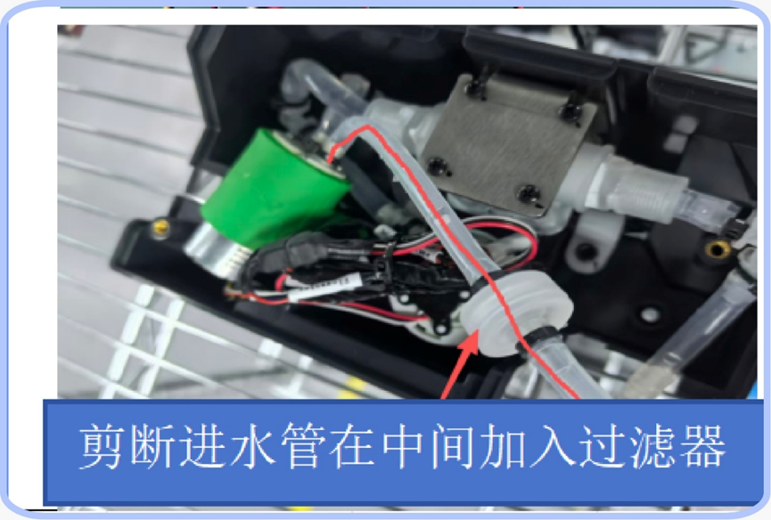

Problemas e Soluções
Este documento tem como objetivo auxiliar na identificação e resolução de falhas nos robôs, garantindo uma operação segura e eficiente.
Para evitar falhas:
-
Garanta que o ambiente esteja conforme a instalação original
-
Não mova o carregador de base de posição
-
Limpe os sensores com regularidade
Sumário
Linha DinerBot (T8, T9, T10, T11)¶
Falhas de carregamento¶
1. Carregamento lento utilizando carregador manual (T11)
Identificação:
Verificar se o modelo do carregador utilizado é de 6A.
Possível causa:
Carregador antigo com amperagem baixa, não eficiente para o carregamento do robô.
Resolução:
Substituir o carregador manual antigo por um de 6A.
2. O robô sai sozinho da base de carregamento sem motivo aparente (T10)
Identificação: robô consegue começar a carregar com sucesso e luz do carregador fica verde, porém inesperadamente sai sozinho do carregador
Possível causa: ?
Resolução:
Verifique se o horário na qual acontece a saída do carregador está dentro do intervalo configurado de carregamento automático.
Se não estiver, avalie se está próximo ao horário de entrada ou saída do robô do expediente.
Se estiver,
?
Falhas de navegação¶
1. O robô derrama bebidas durante o transporte entre os pontos de origem e destino (T8)
Possível causa: excesso de sujeira nas rodas; roda motorizada apresentando mal funcionamento
Resolução:
Para cada tópico, teste se o problema foi resolvido. Caso não tenha, siga para o tópico seguinte.
-
Verifique com a equipe se estão utilizando o modo "Smooth Start" em vez de "Normal Start" para transporte de líquidos
-
Verifique se a velocidade do "Smooth Start" está corretamente configurada (35 cm/s)
-
Realize uma limpeza completa das rodas, removendo sujeira para melhorar a movimentação
-
Substitua a roda com motor ("Hub Motor") direita por uma nova e teste. Se o problema persistir, substitua a outra.
Falhas de inicialização¶
1. \"Sensor fault - encoder has no data (115601)\" (T11)
Identificação:
O robô não consegue inicializar e apresenta a mensagem:
\"Sensor fault - encoder has no data (115601)\"
Nível da bateria sempre mostra 0%
Apesar do ROS ter iniado normalmente e o app de mapeamento pode ser acessado sem problemas, as informações do lidar e da stereovision não aparecem e o chassis version number não é revelado
Possível causa:
Resolução:
Troca da chassis control board por uma nova.
2. Falha em iniciar app de mapeamento ("Software cannot start") / Falha no app principal (T10)
Identificação:
O robô não conseguiu iniciar o mapeamento e apresentou a mensagem "Software cannot start"
Possível causa:
Resolução:
Para cada tópico, teste se o problema foi resolvido. Caso não tenha, siga para o tópico seguinte.
-
Reinicie o robô
-
Limpe o cache e dados do aplicativo Dinerbot e Robot Insallation Assistant
-
Reinstale os aplicativos Dinerbot e Robot Installation Assistant e certifique-se que a versão utilizada é a mais recente
-
Nas configurações do Android, procure pela opção de ativar/desativar o hotspot pessoal do robô. Conecte um computador a ele e tente mandar "ping 192.168.64.20" no prompt de comando. Caso não tenha resposta, troque a IPC do robô.
3. Robô inicia com interface de outro modelo
Identificação:
Interface principal mostra foto de um modelo diferente do que deveria ser.
Funionalidades básicas podem não funcionar (Exemplos: tela do T10 não liga, detecção de bandeja não funciona)
Possível causa: Arquivo product.properties vazio
Resolução:
Falhas de hardware¶
1. Tela touch da interface de operação não funciona
Possível causa: Fio solto ou falha na tela
Resolução: Abra a parte do robô que contém a tela e certifique-se de que os cabos estão bem presos. Caso estejam, troque a tela defeituosa por uma nova.
2. Botão de emergência ficou solto e ao tentar destravar o robô, os fios torceram internamente e se romperam
Possível causa: Fio solto, uso inadequado/agressivo do botão
Resolução: troque o botão e fios de emergência defeituosos por um novo
Outros¶
1. Sensores das bandejas invertidos (T8/T11)
Identificação:
O pedido está configurado para a bandeja 1, porém o robô toma decisões com base nos itens da bandeja 2, e vice-versa.
O robô não aguarda o cliente retirar o pedido e sai imediatamente ao chegar no destino.
Procedimento de validação:
-
Coloque um item na bandeja 1 e outro na bandeja 2
-
Envie o robô para realizar a entrega do pedido da bandeja 1
-
Ao chegar, aguarde alguns segundos e retire o objeto da bandeja 2
-
Se o robô sair, realize uma segunda validação:
-
Coloque novamente um item em cada bandeja, mas envie o robô para a bandeja 2
-
Ao chegar, aguarde alguns segundos e retire o objeto da bandeja 1
-
Se o robô sair, os sensores estão de fato invertidos
Possível causa:
Ao ligar o robô, a atribuição das portas das câmeras ocorre com base na ordem de energização. Isso pode causar inversão na identificação caso não sejam inicializadas corretamente.
Resolução:
Temporariamente, desligar o robô, aguardar pelo menos 1 minuto e ligá-lo novamente.
Caso o problema persista e gere impacto ao cliente, recomenda-se:
-
Desabilitar a detecção automática
-
Configurar um tempo fixo de entrega
Dessa forma, o robô permanecerá parado no destino pelo tempo definido, sem utilizar a detecção automática.
2. Robô não executa corretamente a dança automática de aniversário (T8)
Identificação:
Ao utilizar a opção de "Parabéns personalizado", depois que se preenche as informações e seleciona um ponto para que o robô celebre, este não toca música no caminho e/ou quando chega no destino.
Possível causa:
Configuração do idioma utilizado interfere/danifica de alguma forma na fala da mensagem personalizada estabelecida no "parabéns personalizado".
Dança automática desabilitada
Resolução:
Para cada tópico, teste se o problema foi resolvido. Caso não tenha, siga para o tópico seguinte.
-
Verifique se, quando as informações do parabéns estão sendo configuradas, a opção "Dança automática" localizada no fim da página está habilitada.
-
Verifique na sessão "Aniversário" localizada nas configurações se a opção de "comece a dançar quando a música começar a cantar" está habilitada.
-
Verifique se o som da música está razoavelmente alto na aba "Aniversário" dentro das configurações de som
-
Troque o idioma para inglês, caso não esteja
-
Reinicie o robô
Linha CleanBot (C30, C40)¶
Falhas de navegação¶
1. O robô liga, mas não se move (C30)
Identificação:
Possível causa:
Roda motorizada defeituosa.
Resolução:
Substituir roda motorizada defeituosas por nova.
Falhas de inicialização¶
1. Falha em iniciar app de mapeamento ("Software cannot start") / Falha no app principal (C40)
Identificação: O aplicativo do robô (CleanBot) não inicia (mensagem ininterrupta de "Startup in progress" na tela) e Robot Installation Assistant não abre e apresenta mensagem "Software cannot start"
Possível causa:
Resolução:
Para cada tópico, teste se o problema foi resolvido. Caso não tenha, siga para o tópico seguinte.
-
Reinicie o robô
-
Limpe o cache e dados do aplicativo Dinerbot e Robot Installation Assistant
-
Reinstale os aplicativos Dinerbot e Robot Installation Assistant e certifique-se que a versão utilizada é a mais recente
- Nas configurações do Android, procure pela opção de ativar/desativar o hotspot pessoal do robô. Conecte um computador a ele e tente mandar "ping 192.168.64.20" no prompt de comando. Caso não tenha resposta, troque a IPC do robô.¶
2. Mensagem de erro "No Charging Pile found"
Identificação:
Robô não consegue ir carregar sozinho quando clica em "Recharge";
Robô não consegue realizar limpeza imediata pois apresenta erro "No return points for this floor" quando configura o ponto de retorno da tarefa
OBS: para robô em questão, as vassouras dianteiras e o aspirador de trás não desciam à nível de solo.
Possível causa: ?
Resolução:
Falhas de hardware¶
1. Vazamento de água pelos orifícios de drenagem, mesmo com o robô parado
Possível causa: Falta de Válvula Solenoide e filtro istalado.
Resolução:
-
Drene a água do tanque retirando a peça verde na parte inferior traseira do robô
-
Deite-o de modo em que possa acessar a parte de baixo
-
Remova a tampa de água fixa por 2 parafusos M4
-
Instale um filtro de água no canal mostrado na figura. Cortando o cano, adicione o filtro e isole novamente.

-
Troque a válvula solenoide por uma nova
-
Feche a tampa protetora
Modelo S100¶
Falhas de navegação/inicialização¶
1. Robô não reconhece carregadores (manual ou base), indica 0% de bateria e não se move no mapa, mesmo sendo deslocado fisicamente (S100)
Identificação:
Luzes da base desligadas mesmo com robô ligado
Ao clicar em qualquer um dos botões de emergência, o aviso de botão pressionado não aparece na tela
É possível movimentar o robô mesmo sem pressionar o botão de emergência
Possível causa: Chassis control board defeituosa
Resolução: Trocar Chassis control board defeituosa por uma nova
Geral¶
Falhas de carregamento¶
1. Charging pile parou de funcionar
Identificação:
A luz azul não muda para verde quando o robô encosta no carregador
A luz permanece verde mesmo após o robô sair do carregador
Nenhuma luz acende na parte superior do carregador
Possível causa: por que o carregado de base para de funcionar?
Resolução:
Substituir o carregador com falha por um funcional.
2. Carregador manual parou de funcionar
Identificação:
Luz indicativa na parte superior do carregador não acende.
Possível causa:
Resolução:
Substituir o carregador manual antigo por um novo ou concertar o velho em um especialista elétrico ou configurar robô para utilizar carregador de base.
Falhas de localização¶
Identificação:
Robô invadindo áreas restritas ou se perdendo no ambiente;
Robô posicionando-se de forma incorreta em relação aos pontos criados no mapa.
Possível causa:
Perda de calibração dos sensores.
Resolução:
-
Verifique se o carregador de base está dentro da demarcação estabelecida na instalação
-
Encoste o robô no carregador
-
Verifique se a luz ficou verde
-
Interrompa o carregamento
-
Teste enviar o robô para alguns pontos e certifique-se de que o posicionamento está correto
Outros¶
1. Robô não liga / Robô desligou repentinamente e não liga novamente
Identificação:
Robô com tela preta, incapaz de ligar mesmo após deixá-lo carregando por tempo suficiente.
Observação para T10:
Certifique-se de que os botões de energia localizados na base do robô e atrás da tela (lado esquerdo) foram pressionados. Caso já tenham sido, seguir os passos abaixo.
Possível causa:
Bateria ou UI Board defeituosa
Resolução:
-
Abra a parte do robô que contém a bateria:
-
Meça com um multímetro a voltagem (PREENCHER COMO FAZER ISSO)
-
Se permanecer em 0 V, substitua a bateria e teste. Se não tiver funcionado ou o multímetro indicar voltagem normal, siga os próximos passos:
-
Substitua a UI Board (localizada atrás da tela touch, na cabeça do robô)